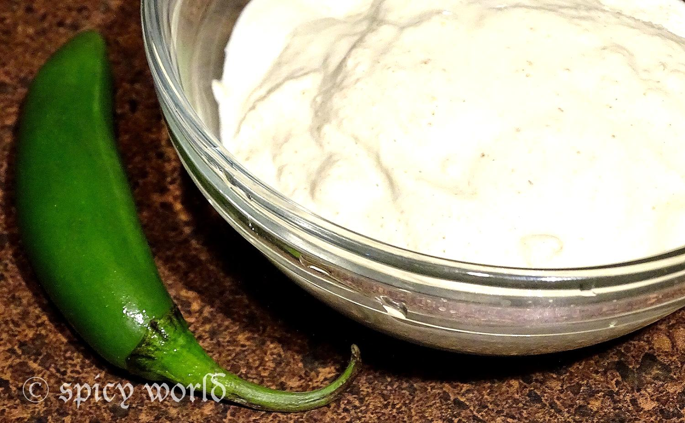
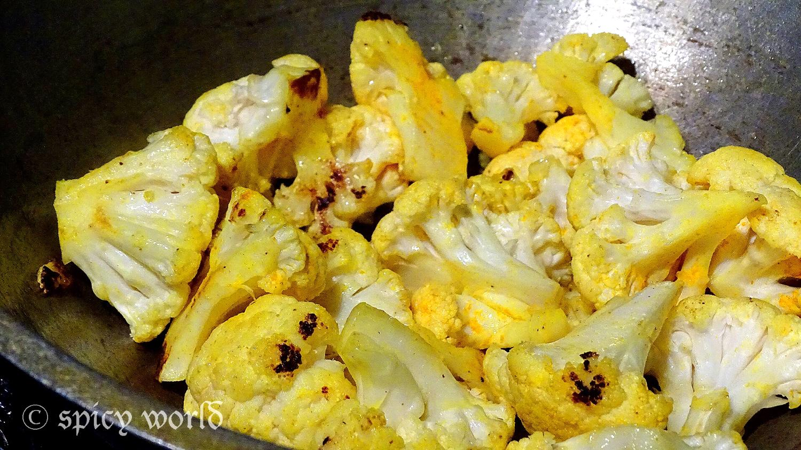
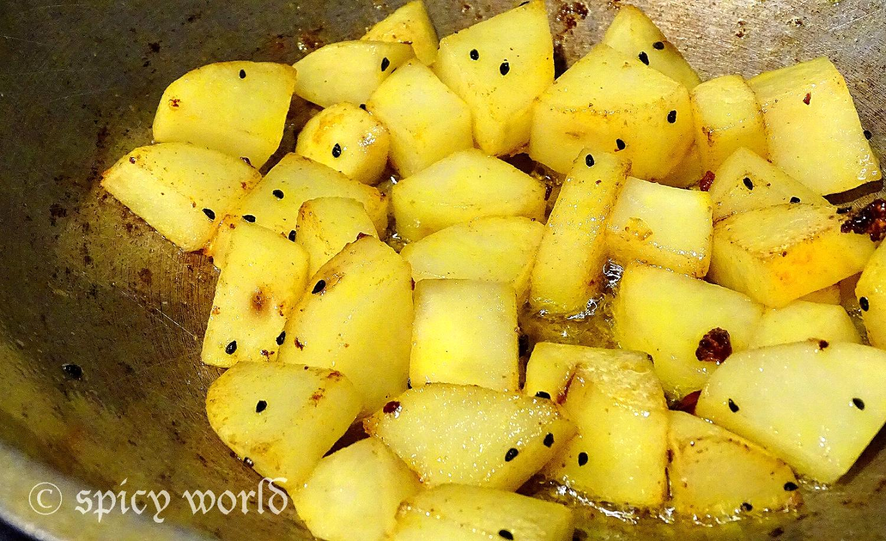

Aloo Fulkopi Posto (Potato and cauliflower cooked in poppy seed paste gravy)
© 2016 Spicy World, Published on: Nov 17, 2015
Bengali without posto(poppy seed)? - impossible. Bengali without aloo(potato)? - no way. I specially can't live without these two. 'Aloo posto' or 'aloo fulkopi posto' is my favourite weekday's lunch with steamed rice and hot daal. My hubby is very fond of 'fulkopi' (cauliflower), that's why I added this in the gravy. But if you don't like you can totally skip this part. The most simple and easy recipe is this one. Here is how I made it ...
")
Ingredients
- 15-20 potato cubes.
- 8-9 cauliflower cubes.
- ½ Teaspoon nigella seeds(kalojeera).
- 2 green chilies.
- 6 Teaspoons poppy seeds.
- 8 Tablespoons of milk.
- 1 dry red chilli.
- 1 Teaspoon turmeric powder.
- Salt and sugar.
- 8 Tablespoons of mustard oil.
- Warm water.
")
Steps
Soak the poppy seeds in milk/water for 2-3 hours. Then blend it with a green chilli to a very smooth paste. Keep it aside.

Wash the cauliflower cubes properly.
Heat 2 Tablespoons mustard oil in a pan.
Add the cauliflower cubes, some salt and ½ Teaspoon turmeric powder. Mix it in high flame for 4 minutes. Then cook this in medium flame for another 5 minutes.
When the cauliflowers become ½ tendor, remove them from the pan.

Heat the remaining oil.
Add nigella seeds and 1 dry redchilli. Saute it for 30 seconds.
Then add the potato cubes, pinch of salt and turmeric powder. Mix it very well for 4 minutes.

After that add the ½ fried cauliflower. Mix it once.
Then add the poppy seed paste. Mix it well.
Then add some warm water, 1 green chilli, some salt and pinch of sugar.
Cook this until the vegetables become soft. If you need more heat, you can add more green chilies.
Your aloo fulkopi posto is ready ...
- Enjoy this hot with some steamed plain rice and daal.
 (Final)")